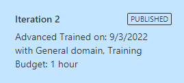

Part 3. Deploy Gradio Web App

Introduction
After we train the model in Azure for 1 hour (free tier) and publishing it, when end up with a Prediction URL.

We are going to use that Prediction endpoint to do the inference.
Here is the App already published for you to try:
Telecom-Object-Detection
The model was trained to detect the following objects:
- Grid Antenna
- Panel antenna
- Radome antenna
- RRU
- Shroud antenna
- Solid antenna

|

|
|
| Grid | Panel | Radome |

|

|

|
| RRU | Shroud | Solid |
Tutorial Parts
- Part 1 covered:
- Creating a free Azure Custom Vision Service.
- Uploading the images to the service.
- Part 2 covered:
- Analyzing what happens to the images after uploading.
- How to label the images using Smart Labeler
- Training and testing the model.
- Part 3:
- Create a Huggingface Gradio Demo.
References
Part 3.1. Publishing a Gradio App
Gradio is a great tool to demo machine learning models. The model is already deployed in Azure, so our Gradio App is going to be our front end to connect to that prediction endpoint. What I mean is that the model itself is not going to be deployed in Hugging Face Spaces, which is the normal workflow.
If you are new to Gradio, I encourage you to start from the Quickstart.
The Gradio demo was created from a Jupyter Notebook with a great tool from fast.ai which is nbdev. You can start here: Create A 🤗 Space From A Notebook
In both tutorials you will find the instructions to setup a Gradio enabled space in Hugging Face.
This code is based and adapted from: - https://github.com/MicrosoftLearning/AI-102-AIEngineer/blob/master/18-object-detection/Python/test-detector/test-detector.py - https://huggingface.co/spaces/Gradio-Blocks/Object-Detection-With-DETR-and-YOLOS/blob/main/app.py
Install and import libraries
#|export
import gradio as gr
import numpy as np
import os
import io
import requests, validators
from pathlib import PathAzure Functions
#| export
from azure.cognitiveservices.vision.customvision.prediction import CustomVisionPredictionClient
from msrest.authentication import ApiKeyCredentials
from matplotlib import pyplot as plt
from PIL import Image, ImageDraw, ImageFont
from dotenv import load_dotenvEnvironment variables
Update the configuration variables in the .env file that contains:
PredictionEndpoint=YOUR_PREDICTION_ENDPOINT
PredictionKey=YOUR_PREDICTION_KEY
ProjectID=YOUR_PROJECT_ID
ModelName=YOUR_PUBLISHED_MODELWe need to create these environment variables in the Hugging Face Spaces.
Credentials and services
#| export
def fig2img(fig):
buf = io.BytesIO()
fig.savefig(buf)
buf.seek(0)
img = Image.open(buf)
return img
def custom_vision_detect_objects(image_file: Path):
dpi = 100
# Get Configuration Settings
load_dotenv()
prediction_endpoint = os.getenv('PredictionEndpoint')
prediction_key = os.getenv('PredictionKey')
project_id = os.getenv('ProjectID')
model_name = os.getenv('ModelName')
# Authenticate a client for the training API
credentials = ApiKeyCredentials(in_headers={"Prediction-key": prediction_key})
prediction_client = CustomVisionPredictionClient(
endpoint=prediction_endpoint, credentials=credentials)
# Load image and get height, width and channels
#image_file = 'produce.jpg'
print('Detecting objects in', image_file)
image = Image.open(image_file)
h, w, ch = np.array(image).shape
# Detect objects in the test image
with open(image_file, mode="rb") as image_data:
results = prediction_client.detect_image(project_id, model_name, image_data)
# Create a figure for the results
fig = plt.figure(figsize=(w/dpi, h/dpi))
plt.axis('off')
# Display the image with boxes around each detected object
draw = ImageDraw.Draw(image)
lineWidth = int(w/800)
color = 'cyan'
for prediction in results.predictions:
# Only show objects with a > 50% probability
if (prediction.probability*100) > 50:
# Box coordinates and dimensions are proportional - convert to absolutes
left = prediction.bounding_box.left * w
top = prediction.bounding_box.top * h
height = prediction.bounding_box.height * h
width = prediction.bounding_box.width * w
# Draw the box
points = ((left,top), (left+width,top),
(left+width,top+height), (left,top+height),
(left,top))
draw.line(points, fill=color, width=lineWidth)
# Add the tag name and probability
plt.annotate(
prediction.tag_name + ": {0:.0f}%".format(prediction.probability * 100),
(left, top-1.372*h/dpi),
backgroundcolor=color,
fontsize=max(w/dpi, h/dpi),
fontfamily='monospace'
)
plt.imshow(image)
plt.tight_layout(pad=0)
return fig2img(fig)
outputfile = 'output.jpg'
fig.savefig(outputfile)
print('Resulabsts saved in ', outputfile)Gradio
#| export
title = """<h1 id="title">Telecom Object Detection with Azure Custom Vision</h1>"""
css = """
h1#title {
text-align: center;
}
"""Example images and url to be used in the App
#| export
urls = ["https://www.dropbox.com/s/y5bk8om5ucu46d3/747.jpg?dl=1"]
imgs = [path.as_posix() for path in sorted(Path('images').rglob('*.jpg'))]
img_samples = [[path.as_posix()] for path in sorted(Path('images').rglob('*.jpg'))]Functions for the Gradio App
#| export
def set_example_url(example: list) -> dict:
print(gr.Textbox.update(value=example[0]))
return gr.Textbox.update(value=example[0])
def set_example_image(example: list) -> dict:
return gr.Image.update(value=example[0])
def detect_objects(url_input:str, image_input:Image):
print(f"{url_input=}")
if validators.url(url_input):
image = Image.open(requests.get(url_input, stream=True).raw)
elif image_input:
image = image_input
print(image)
print(image.size)
w, h = image.size
if max(w, h) > 1_200:
factor = 1_200 / max(w, h)
factor = 1
size = (int(w*factor), int(h*factor))
image = image.resize(size, resample=Image.Resampling.BILINEAR)
resized_image_path = "input_object_detection.jpg"
image.save(resized_image_path)
return custom_vision_detect_objects(resized_image_path)#| export
with gr.Blocks(css=css) as demo:
gr.Markdown(title)
with gr.Tabs():
with gr.TabItem("Image Upload"):
with gr.Row():
image_input = gr.Image(type='pil')
image_output = gr.Image(shape=(650,650))
with gr.Row():
example_images = gr.Dataset(components=[image_input], samples=img_samples)
image_button = gr.Button("Detect")
with gr.TabItem("Image URL"):
with gr.Row():
url_input = gr.Textbox(lines=2, label='Enter valid image URL here..')
img_output_from_url = gr.Image(shape=(650,650))
with gr.Row():
example_url = gr.Dataset(components=[url_input], samples=[[str(url)] for url in urls])
url_button = gr.Button("Detect")
url_button.click(detect_objects, inputs=[url_input,image_input], outputs=img_output_from_url)
image_button.click(detect_objects, inputs=[url_input,image_input], outputs=image_output)
example_url.click(fn=set_example_url, inputs=[example_url], outputs=[url_input])
example_images.click(fn=set_example_image, inputs=[example_images], outputs=[image_input])
demo.launch()Conslusions
- Object detection is a complex problem. The fact that the service does a reasonable good job with unbalanced training photos and with such a limited training time talks about the great margin for improvement.